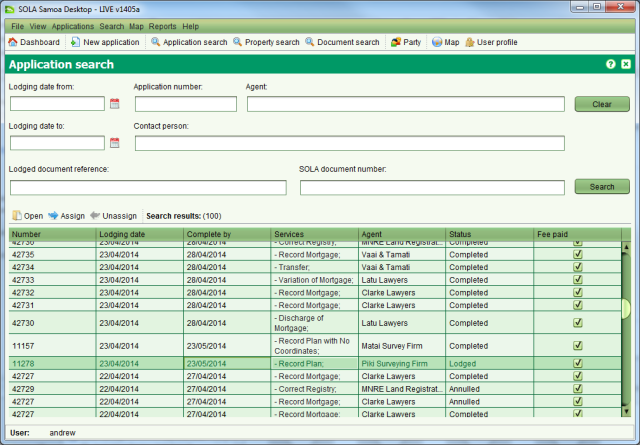

The Application Search screen allows you to find applications of interest. It can be
accessed from the Search > Search Applications menu or clicking Application search.
Application search.

Application Search
You can search by any combination of application number, agent name, contact person name, document reference and/or a lodging date range. The application number, agent name and contact person name also support partial and full matching.
To view the details of an application select it from the results table and press the Open
button.
Open
button.
The Application Search can be used to locate and assign or unassign applications that are
not displayed on the Dashboard. Search for an select the application from the results table
and choose the Assign or
Assign or Unassign buttons. Note that the buttons will remain disabled
unless you have appropriate rights to complete the action.
Unassign buttons. Note that the buttons will remain disabled
unless you have appropriate rights to complete the action.
The search results can also be sorted by any of the columns displayed in the Search results table. Simply click a column header one or more times to switch the sort of the column values between ascending and descending.